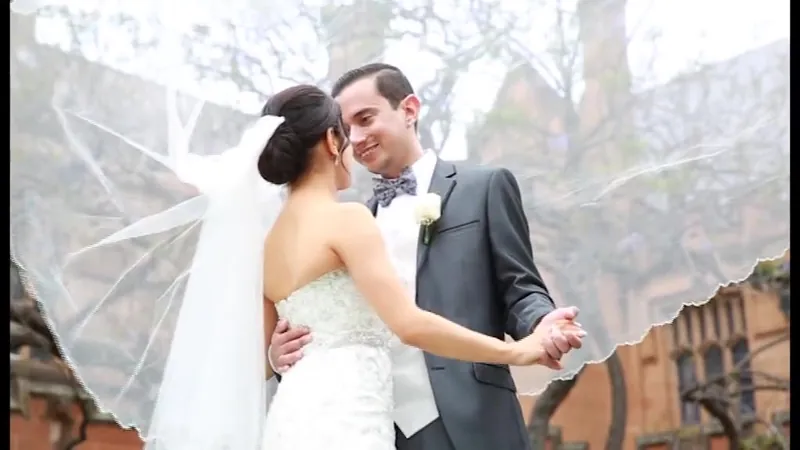
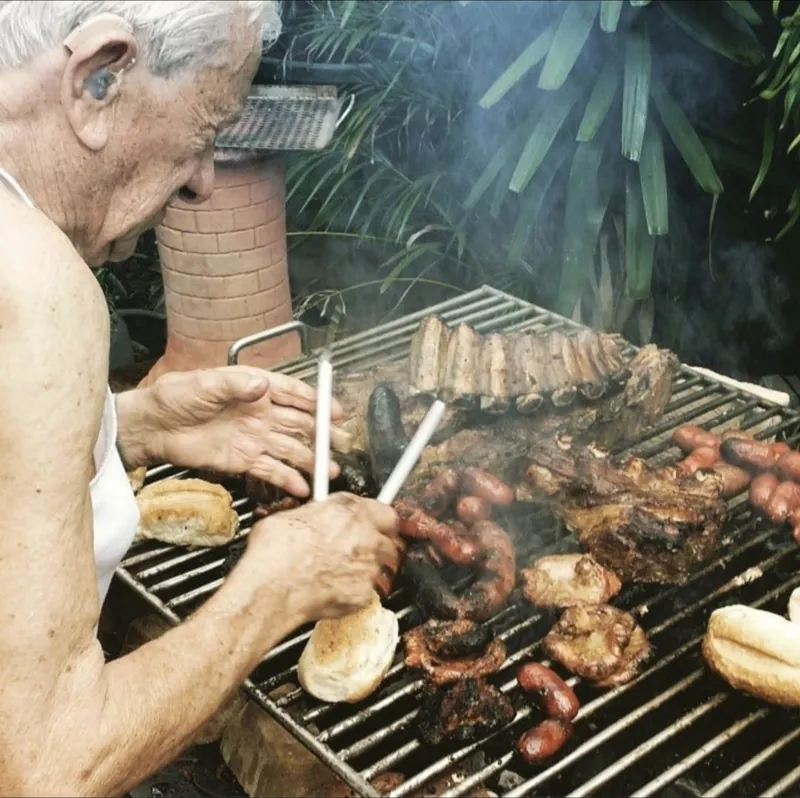
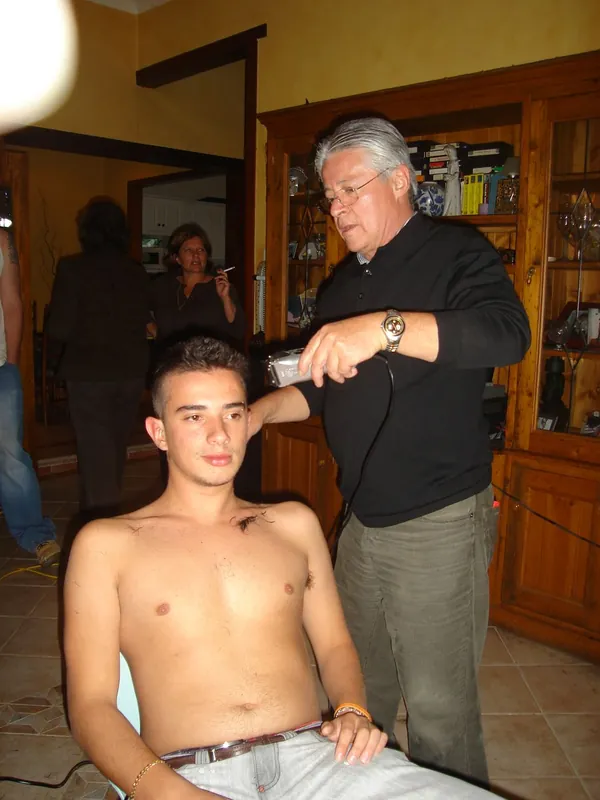
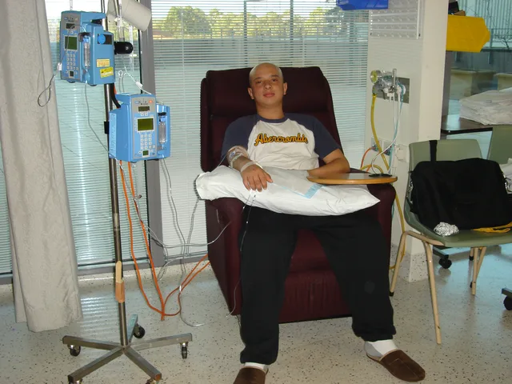
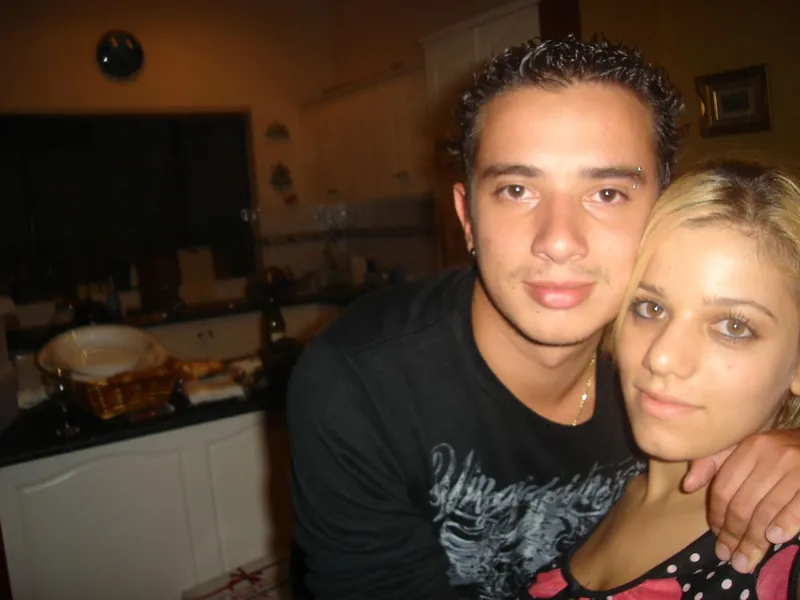
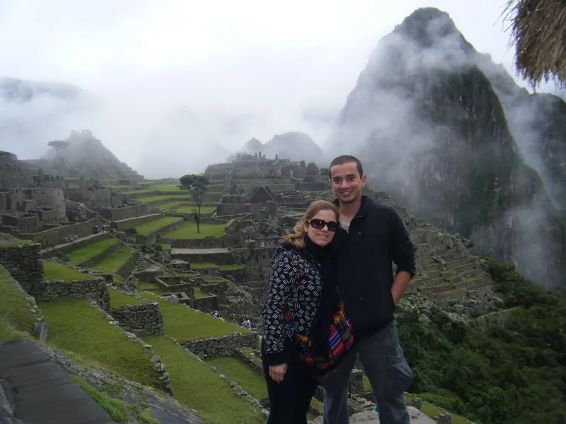
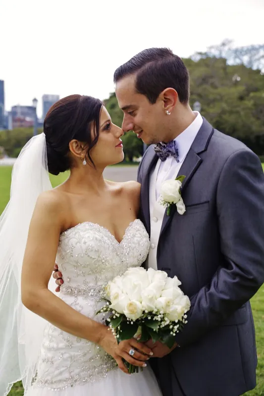
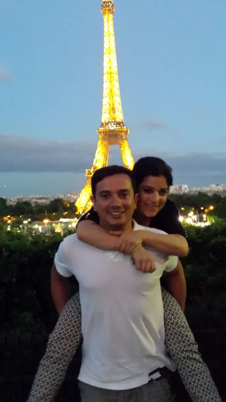

A true story · Sydney · 2006 to 2016
Still Here
The thing about a rollercoaster is you never see the drop coming. You're coasting along the top, wind in your face, grinning like an idiot. And then the track disappears beneath you.
34 chaptersThe first 10 freeHundreds of real photos and videos
How it started
2006 was meant to be the year nothing could touch me.
At eighteen, my family lost our home.
Two months later, I was told I had cancer.
Then I met a girl on MySpace.
That was only the first year. This is the next ten, told the way I lived them.
The ride so far
A few stops along the way
Real photos from the book. There are hundreds more inside the chapters.



'06 5
'06 6
'07
'11 3 8
'14 12 6From the book
He didn't make a speech. He just said, quietly, that if I was going to be bald, then so was he.
Start here
The first ten chapters are free
All of 2006 and into 2007. The house, the cancer, the twelve weeks in the ward, the night I found her on MySpace, and the night she told me about her kidneys. No sign-up needed.
Read Chapter 1- 01The High Before the DropEarly 2006
- 02Fortress CrumblesFeb 2006
- 03The DiveApr–May 2006
- 04Before the StormMay 2006
- 05The GrindJun 2006
- 06Words from the WardJun–Jul 2006
- 07The Extra CycleJul–Aug 2006
- 08Climbing from the AshesLate 2006
- 09The Girl on MySpaceOct–Dec 2006
- 10Back in the GameJan 2007
24 more chapters, from New Zealand to 2016. Unlock the full story for AU$9.99 when you finish Chapter 10.

About the book
Ten years, two people, one long ride
I'm Nathan. At nineteen I had cancer. A few months later I met Lucia, a girl who'd died for a few minutes as a child and grew up knowing her kidneys would one day give out. We decided early that we'd face whatever came together.
This book is what came. Twelve weeks of chemo. A kidney from her dad. A wedding people still talk about. And a year that changed us for good. I've been writing it on and off for nine years, and every word of it is true.
Chapters 1 to 10
Free
Start reading now
The full story
AU$9.99
All 34 chapters, with every photo and video